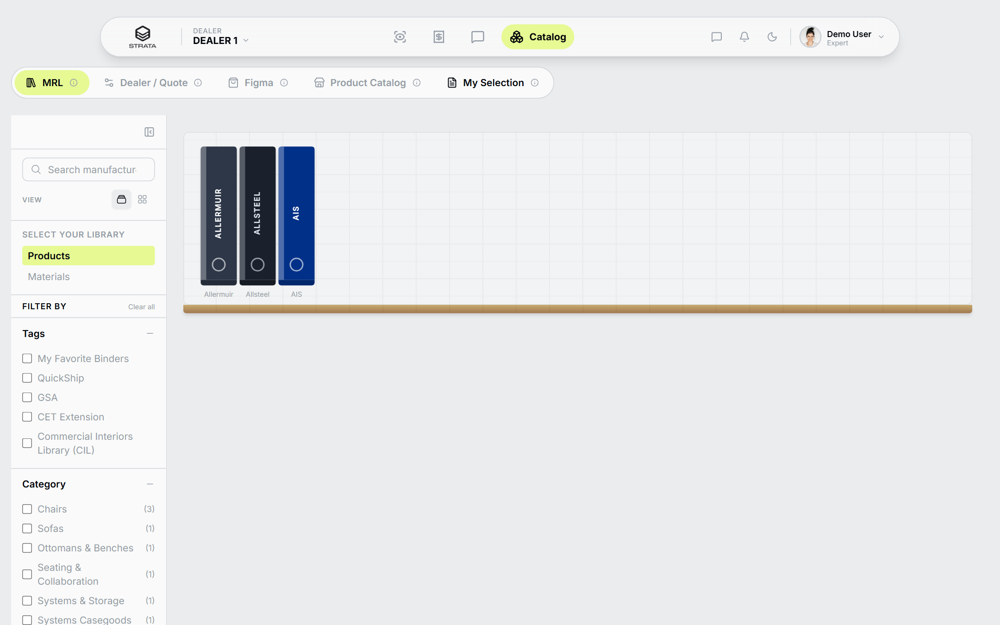
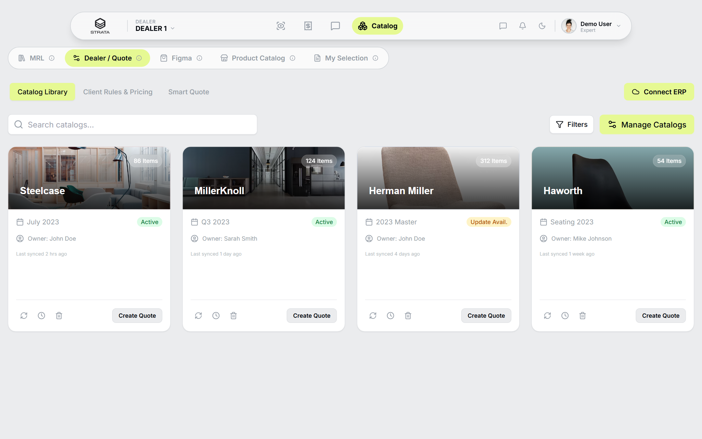
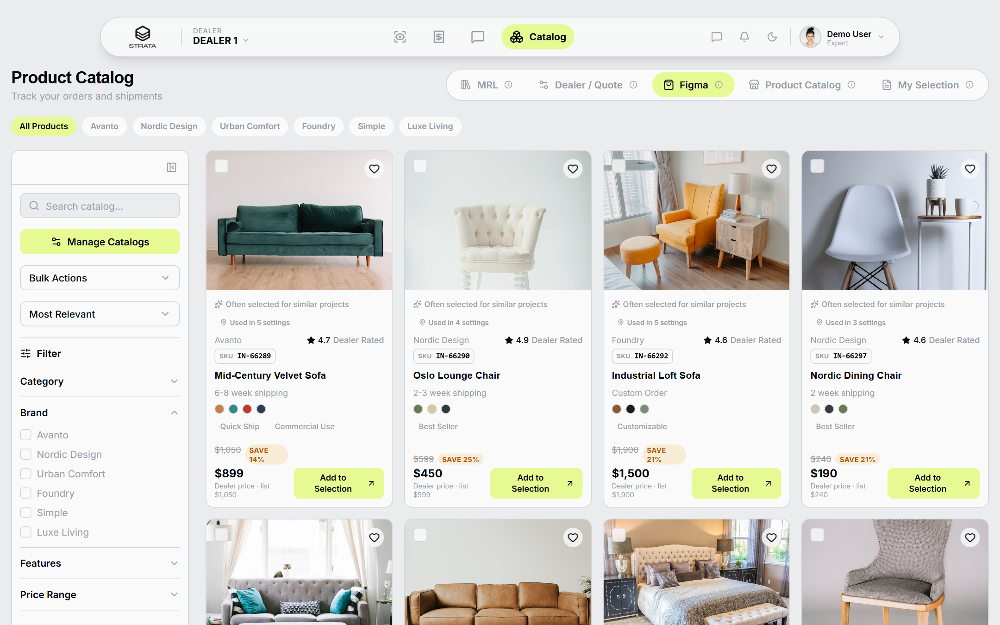
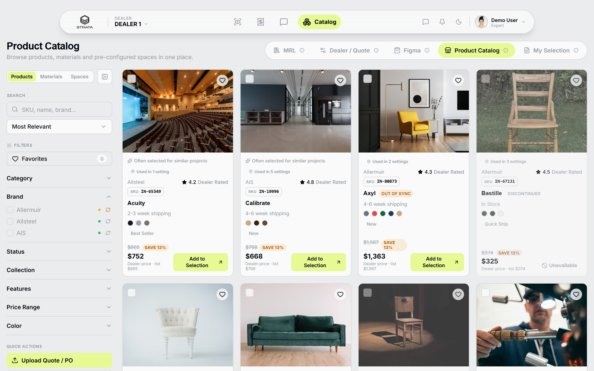
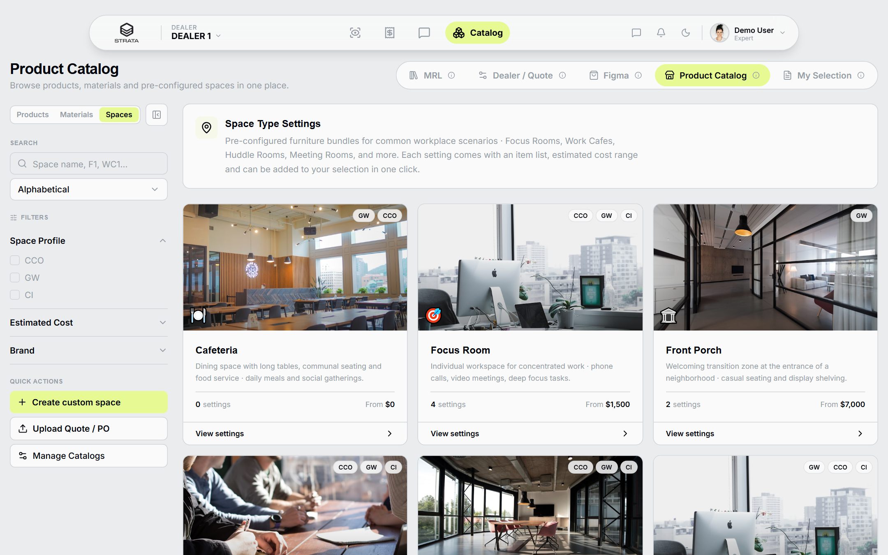
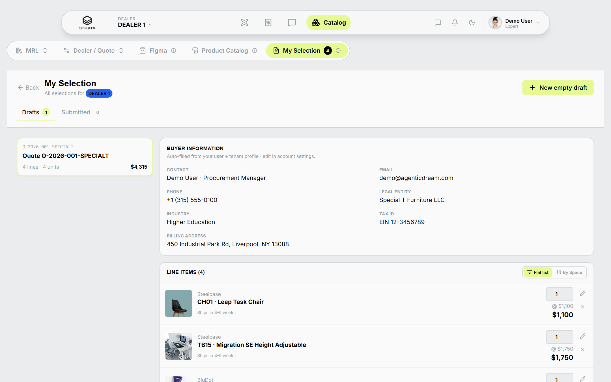

The consolidated storefront for dealer selection & quoting.La tienda consolidada para selección y cotización del dealer.
Product Catalog and My Selection are the current version of the workspace — built by reuniting the best of MRL, Dealer/Quote and Figma into a single place a dealer actually wants to work in.Product Catalog y My Selection son la versión actual del workspace — construidos reuniendo lo mejor de MRL, Dealer/Quote y Figma en un solo lugar donde un dealer realmente quiere trabajar.
What problem this solvesQué problema resuelve
A dealer spends most of the day switching between vendor PDFs, spreadsheets and email threads. The workspace fixes three specific frictions that cost them hours every week.Un dealer pasa la mayor parte del día saltando entre PDFs de proveedores, hojas de cálculo y cadenas de correo. El workspace resuelve tres fricciones específicas que le cuestan horas cada semana.
A different catalog per brand — no single place to search across all vendors at once.Un catálogo distinto por marca — no hay un solo lugar para buscar entre todos los proveedores.
Quote drafts live in Excel and email — versions get lost, teammates step on each other's edits.Los borradores de cotización viven en Excel y correos — se pierden versiones, dos personas editan lo mismo.
Every new space is quoted from scratch — nothing built for one client gets reused for the next one.Cada espacio se cotiza desde cero — lo que se armó para un cliente no se reutiliza para el siguiente.
How to read the five tabsCómo leer los cinco tabs
The workspace has five tabs. Three are reference tabs, kept as living documentation of where we started. Two are the current version, where the real work happens.El workspace tiene cinco tabs. Tres son tabs de referencia, conservados como documentación viva del punto de partida. Dos son la versión actual, donde ocurre el trabajo real.
MRLReference
Classic vendor library. Brand → category → product with rich specs and CAD / Revit downloads.Librería clásica del proveedor. Marca → categoría → producto con specs ricas y descargables CAD / Revit.
Dealer / QuoteReference
Admin panel to manage imported catalogs and buying preferences.Panel administrativo para gestionar catálogos importados y preferencias de compra.
FigmaReference
Curated storefront aligned with the original Figma design.Storefront curado, alineado con el diseño original de Figma.
Product CatalogCurrent version
The consolidated storefront. Products, materials and pre-configured spaces in one place.La tienda consolidada. Productos, materiales y espacios pre-configurados en un solo lugar.
My SelectionCurrent version
The live workspace. Multi-draft quotes, auto-filled buyer info, submit flow with reference number.El workspace vivo. Cotizaciones multi-borrador, info del comprador auto-completada, flujo de submit con número de referencia.
The reference tabsLos tabs de referencia
We keep them visible on purpose. Each one carries a pattern the dealer already knows from the industry — we didn't want to erase that knowledge; we wanted to bring it forward.Los mantenemos visibles a propósito. Cada uno carga un patrón que el dealer ya conoce de la industria — no queríamos borrar ese conocimiento, queríamos llevarlo adelante.
MRL · Manufacturer Reference LibraryReference
The classic vendor library structure that every A&D professional recognizes. Seven manufacturers — Allermuir, Allsteel, AIS, Luum, Camira, HBF and Mayer — organized as brand pages with sales and A&D contacts, product families, and downloadable resources (PDF guarantees, brochures, AutoCAD / Revit / SketchUp files).La estructura clásica de librería de proveedor que todo profesional de A&D reconoce. Siete fabricantes — Allermuir, Allsteel, AIS, Luum, Camira, HBF y Mayer — organizados como páginas de marca con contactos de ventas y A&D, familias de producto y recursos descargables (PDFs de garantía, folletos, archivos AutoCAD / Revit / SketchUp).
What we kept from it:Qué conservamos:
Rich brand pages with the vendor identity intact.Páginas de marca ricas, con la identidad del proveedor intacta.
Product specs, performance data and warranty PDFs.Specs de producto, datos de performance y PDFs de garantía.
Symbol folders with 2D and 3D drawings across formats.Carpetas de símbolos con dibujos 2D y 3D en varios formatos.

Dealer / Quote · Manage CatalogsReference
The dealer's control center. Imported catalog cards with sync status (Active, Update Available, Out of Sync), delta reports on every sync, tenant-scoped buying preferences, and the option to import a new catalog or disconnect an existing one.El centro de control del dealer. Tarjetas de catálogos importados con estado de sync (Activo, Actualización Disponible, Fuera de Sync), reportes de delta en cada sync, preferencias de compra por tenant, y la opción de importar un nuevo catálogo o desconectar uno existente.
What we kept from it:Qué conservamos:
Explicit catalog status per source so nothing goes stale silently.Estado explícito por catálogo — nada queda desactualizado en silencio.
Delta reporting on updates (added / updated / removed items).Reporte de delta al actualizar (ítems añadidos / actualizados / removidos).
Per-tenant preferences — brand priorities, delivery zones.Preferencias por tenant — prioridades de marca, zonas de entrega.

Figma · Original storefront designReference
The original storefront design from Figma. A twelve-product curated assortment, a clean sidebar with four filter dimensions (Category, Brand, Features, Price), seven sort options and a quote-builder flow embedded in each product's detail modal.El diseño original de storefront desde Figma. Una selección curada de doce productos, un sidebar limpio con cuatro dimensiones de filtro (Categoría, Marca, Features, Precio), siete opciones de sort y un flujo de armado de cotización embebido en el modal de detalle de cada producto.
What we kept from it:Qué conservamos:
The clean sidebar-with-filters layout, adopted as the base grid.El layout limpio de sidebar con filtros, adoptado como base del grid.
Visible SKU and colorway swatches on every card.SKU visible y muestras de color en cada tarjeta.
The multi-line quote builder pattern inside the product modal.El patrón de armado de cotización multi-línea dentro del modal.

The current version · Product Catalog + My SelectionLa versión actual · Product Catalog + My Selection
Two tabs carry the day-to-day work. Product Catalog unites what the reference tabs taught us and adds three new capabilities. My Selection is the live workspace where selections turn into submitted quotes.Dos tabs cargan el trabajo del día a día. Product Catalog reúne lo que los tabs de referencia enseñaron y suma tres capacidades nuevas. My Selection es el workspace vivo donde las selecciones se convierten en cotizaciones enviadas.
Product Catalog · Unified storefrontCurrent version
One search bar, one grid, three views the dealer can switch on the fly: Products, Materials and Spaces. Spaces is the new one — six space types (Focus Room, Work Café, Huddle Room, Meeting Room, Phone Booth, Collaboration Lab) and fifteen pre-configured settings ready to add to a quote in one click.Una sola barra de búsqueda, una sola grilla, tres vistas que el dealer alterna al momento: Productos, Materiales y Espacios. Espacios es la novedad — seis tipos de espacio (Focus Room, Work Café, Huddle Room, Meeting Room, Phone Booth, Collaboration Lab) y quince configuraciones pre-armadas, listas para añadirse a una cotización en un click.
What's new here (not in the reference tabs):Qué hay de nuevo aquí (que no está en los tabs de referencia):
Spaces mode with pre-configured bundles per workplace scenario.Modo Espacios con bundles pre-configurados por escenario.
Custom Spaces — a dealer can build their own, scoped to their tenant.Espacios personalizados — el dealer arma los suyos, atados a su tenant.
Configurable options and finishes aligned to the production data schema.Opciones y acabados configurables, alineados al esquema de producción.
Multi-tenant scoping — each dealer sees only their own custom catalogs.Alcance multi-tenant — cada dealer ve solo sus catálogos personalizados.


My Selection · Quote draftsCurrent version
The live workspace. Multiple parallel drafts per dealer, each with buyer information auto-filled from the tenant profile. Line items can be viewed flat or grouped by the space setting they came from. Submitting generates a reference number of the form Q-YYYY-NNN-TENANT. Everything persists per tenant so a browser refresh never loses work.El workspace vivo. Varios borradores paralelos por dealer, cada uno con la información del comprador auto-completada desde el perfil del tenant. Los ítems se pueden ver planos o agrupados por el espacio del que vinieron. Al enviar se genera un número de referencia con el formato Q-YYYY-NNN-TENANT. Todo se persiste por tenant — un refresh del navegador nunca pierde el trabajo.
What it delivers:Qué entrega:
Multiple drafts running in parallel per dealer.Múltiples borradores paralelos por dealer.
Buyer info auto-filled from user + tenant profile.Información del comprador auto-completada (usuario + tenant).
Flat / By space setting view toggle.Toggle de vista Plana / Por espacio.
Reference number on submit; submitted quotes archived.Número de referencia al enviar; cotizaciones enviadas archivadas.

What a Dealer gets out of thisQué gana el Dealer con esto
Every capability answers a specific question a sales rep gets asked weekly — "did we already quote this?", "can you send me the same setup we did for the last client?", "did the vendor update the price?".Cada capacidad responde a una pregunta específica que un vendedor recibe cada semana — "¿ya cotizamos esto?", "¿me pasás el mismo armado que hicimos para el cliente anterior?", "¿el proveedor actualizó el precio?".
One place to searchUn solo lugar para buscar
Products, materials and spaces under one bar. No more jumping between vendor PDFs.Productos, materiales y espacios bajo una sola barra. Se acaba el salto entre PDFs.
Multiple quotes in progress at once, saved per dealer, survive browser refresh.Varias cotizaciones en paralelo, guardadas por dealer, sobreviven al refresh.
Build a setup once, reuse it across clients. Scoped to the dealer — never leaks between tenants.Armar una configuración una vez y reutilizarla entre clientes. Aislada por dealer.
Multi-tenant isolationAislamiento multi-tenant
Each dealer sees only their catalogs, spaces and quote drafts. Nothing crosses.Cada dealer ve solo sus catálogos, espacios y borradores. Nada se cruza.
Quote / PO ingestIngesta de cotización / PO
Upload a PDF or purchase order — matched automatically to catalog products, human review at the end.Se sube un PDF o PO — se matchea automáticamente a productos del catálogo, con revisión humana al final.
"Previously quoted" historyHistorial de "ya cotizado"
A subtle badge tells the rep which products they've already sent to someone else — great signal for what's working.Un badge sutil le dice al vendedor qué productos ya envió antes — buena señal de qué funciona.
Try it in five stepsProbalo en cinco pasos
A two-minute path anyone can follow — from picking a demo tenant to receiving a real reference number.Un recorrido de dos minutos que cualquiera puede seguir — desde elegir un tenant demo hasta recibir un número de referencia real.
Pick a demo tenantElegí un tenant demo
Top-left of the app. Five options — Dealer 1, Meridian Office, Strata, Apex Interiors, ClearSpace Design. Each has its own catalogs and quote drafts.Arriba a la izquierda. Cinco opciones — Dealer 1, Meridian Office, Strata, Apex Interiors, ClearSpace Design. Cada uno tiene sus propios catálogos y borradores.
Open Product Catalog → SpacesAbrí Product Catalog → Espacios
The three-way toggle in the top-right of Product Catalog. Switch to Spaces to see the six pre-configured space types.El toggle de tres vías arriba a la derecha de Product Catalog. Cambiá a Espacios para ver los seis tipos pre-configurados.
Add a Space Setting to SelectionAñadí un espacio a la selección
Pick a space (for example Work Café). Open one of its settings. Use "Add all to Selection" — every item in the bundle drops into the active draft at once.Elegí un espacio (por ejemplo Work Café). Abrí una de sus configuraciones. Usá "Add all to Selection" — todos los ítems del bundle caen en el borrador activo de una vez.
Open My SelectionAbrí My Selection
Adjust quantities, swap colorways / finishes / fabrics. Toggle the line-item view between flat and grouped by space setting to check the shape of the quote.Ajustá cantidades, cambiá colorways / acabados / telas. Alterná la vista de ítems entre plana y agrupada por espacio para ver la forma de la cotización.
SubmitEnviá
Confirm buyer info (already auto-filled from the tenant), submit, and receive a reference number of the form Q-YYYY-NNN-TENANT.Confirmá la info del comprador (ya auto-completada desde el tenant), enviá, y recibí un número de referencia con el formato Q-YYYY-NNN-TENANT.
Fact sheetFicha rápida
Numbers from the current demo — the seed data reflects the shape of a real dealer deployment.Números del demo actual — la data seed refleja la forma de un despliegue real de dealer.